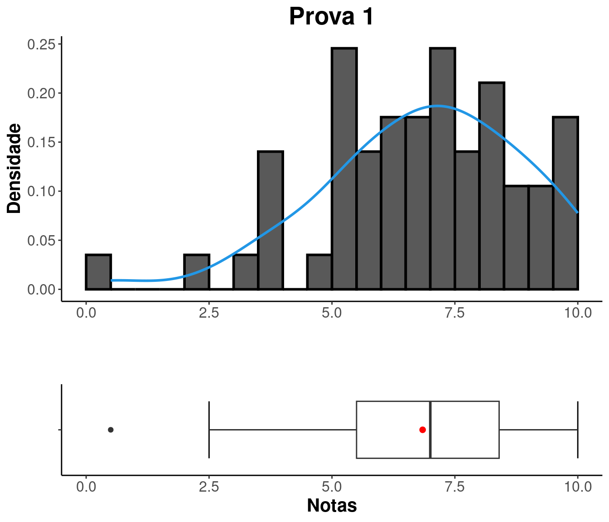

Introdução à Estatística
Prof. Me. Lineu Alberto Cavazani de Freitas
2023/02 - Engenharia Elétrica
2023/02 - Engenharia Elétrica
Notas e frequência
Busque sua situação digitando seu GRR na caixa “Search”.
Análise das notas
PROVA 1
| Mínimo | Q1 | Média | Mediana | Q3 | Máximo |
|---|---|---|---|---|---|
| 0.5 | 5.4 | 6.795 | 6.9 | 8.4 | 10 |
| Amplitude | Variância | Desvio padrão |
|---|---|---|
| 9.5 | 4.113 | 2.028 |

REMOTA 1
| Mínimo | Q1 | Média | Mediana | Q3 | Máximo |
|---|---|---|---|---|---|
| 0 | 6.1 | 7.484 | 8 | 9.9 | 10 |
| Amplitude | Variância | Desvio padrão |
|---|---|---|
| 10 | 7.087 | 2.662 |

|

|

|